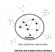
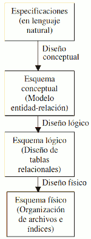

La interpretación de los fenómenos que ocurren en la naturaleza es una actividad natural del ser humano. Para ello el ser humano se ha basado en su capacidad de abstracción.
Abstracción: capacidad mediante la cual somos capaces de simplificar el proceso de interpretación, simplificando o reduciendo el número de parámetros y relaciones existentes en el fenómeno natural que se desea interpretar.
Al conjunto de las propiedades que caracterizan un fenómeno se le denomina datos, y al conjunto de valores que estas propiedades pueden presentar se les denomina información.
Así tenemos que un modelo es la representación abstracta de un determinado fenómeno natural.
La medición de valores correspondientes a los datos se realizará mediante un conjunto de tipos de datos (entero, real, booleano, cadena de caracteres, etc) los cuales pueden tomar un conjunto de valores predefinido de antemano (dominio).
Ejemplos:
| Dato | Dominio |
| Nombre | Conjunto de caracteres del alfabeto con una longitud máxima de 100 caracteres. Puede incluir espacios. |
| Edad | Números enteros comprendidos entre 0 y 200. |
| Fecha de nacimiento | Conjunto de fechas válidas para el calendario occidental. |
| Peso | Números reales positivos con 3 decimales. |
| Salario | Números reales positivos con 2 decimales. |
De esta forma, un dato vendrá definido por el nombre del propio dato y su información en un momento determinado en el mundo real. Así, el dato "peso" de una persona, vendrá determinado por el nombre del dato y la información de su valor en kg en un momento concreto: "peso: 67". La información debe ser almacenada de forma que permita su comunicación.
Un Modelo de Datos es una unidad de abstracción mediante la cual puede describirse un fenómeno real o abstracto. En él se describen las propiedades que caracterizan al fenómeno, las relaciones entre estas propiedades y cómo las propiedades y las relaciones pueden evolucionar con el tiempo.
El primer paso en la representación de un fenómeno del mundo real es la determinación de los límites del fenómeno, es decir, qué datos son los que intervienen y cómo pueden ser medidos.
De forma general, la representación de un problema requiere el seguimiento de los siguientes pasos:
- Definición del problema: mediante una descripción simple y concreta donde se detalla la función u objetivo que el sistema desea alcanzar. Interesa describir cómo el sistema se comporta a grandes rasgos, haciendo énfasis en las relaciones con el exterior.
- Definición de la arquitectura del problema: mediante una descripción de las "partes" importantes del sistema y cómo interactúan entre ellas.
- Definición de la estructura del problema: mediante la descripción de los elementos del sistema. Se determinan qué objetos, entidades, datos o variables son las que forman parte del problema en estudio. Para cada uno de estos objetos se determina:
- La definición del objeto: descripción de la función que desempeña el objeto dentro del problema en estudio.
- La medida del objeto: descripción de los valores que pueden ser medidos o puede tomar el objeto.
- Las relaciones entre objetos: descripción de las interdependencias o cualquier otro tipo de relaciones entre objetos.
- La definición de las restricciones inherentes a los objetos: descripción de qué valores pueden ser medidos para cada uno de los objetos en base a las relaciones que mantienen con el resto de objetos del sistema. Así, un sofá puede ser de muchos colores, pero si es de la colección primavera_2024 solo podrá ser "verde" o "naranja".
- Definición de la dinámica: descripción de la evolución que el problema va a tener o tiene con el tiempo.
- Estudio del comportamiento del modelo propuesto: donde se analizará la adecuación del sistema propuesto a los objetivos deseados.
Los Modelos de Datos permiten la representación del problema a tres niveles de abstracción:
- Nivel conceptual: se representan los tipos o clases de objetos y sus relaciones . Se describe cada uno de los tipos de objetos especificando sus propiedades y dominio en el cual pueden ser medidas, así como las restricciones en los valores que pueden presentarse. El nivel conceptual es independiente de las herramientas y mecanismos que se vayan a utilizar para la representación y tratamiento. Suele utilizarse alguna variante del modelo entidad-relación para las bases de datos relacionales.
- Nivel lógico: se parte del resultado del diseño conceptual, que se transforma de forma que se adapte a la tecnología que se debe emplear. Se representa el problema bajo las limitaciones impuestas por la representación y el tratamiento de la información que se vaya a realizar. Así, el tratamiento manual o automático impone unas restricciones; el soporte donde se almacena la información impone otras restricciones, el hardware utilizado impone otras restricciones, etc. En el modelo relacional se usan las tablas.
- Nivel físico: en esta etapa se transforma la estructura obtenida en la etapa del diseño lógico, con el objetivo de conseguir una mayor eficiencia; además, se completa con aspectos de implementación física que dependerán del SGBD. El sistema se representa en la forma en que es visto por el sistema de representación y tratamiento utilizado. Se utilizan SGBD concretos.
| Nivel de descripción | Estructura | Comportamiento |
| Modelo Conceptual | Descripción de los objetos del mundo real, de sus atributos o propiedades y de las relaciones entre objetos. | Descripción del comportamiento de los objetos. Las acciones, operaciones y procesos que estos objetos realizan sobre otros objetos, así como las que son realizadas sobre los objetos del sistema. |
|
Modelo Lógico |
Descripción de los objetos lógicos, identificando los atributos por los cuales estos pueden ser identificados, así como las relaciones existentes entre los objetos. | Descripción de las tareas que se deben realizar para representar el comportamiento de los objetos. Estas tareas se agruparán en fases y procedimientos. |
| Modelo Físico Modelo procedimental |
Descripción de los objetos físicos. Las estructuras y relaciones de los objetos es representada de forma adecuada para su posterior almacenamiento, recuperación y tratamiento. | Descripción de las acciones elementales que se deben realizar para representar el comportamiento de los objetos. Estas acciones son representadas bajo las limitaciones del lenguaje que se vaya a utilizar para su implementación en programas de ordenador. |